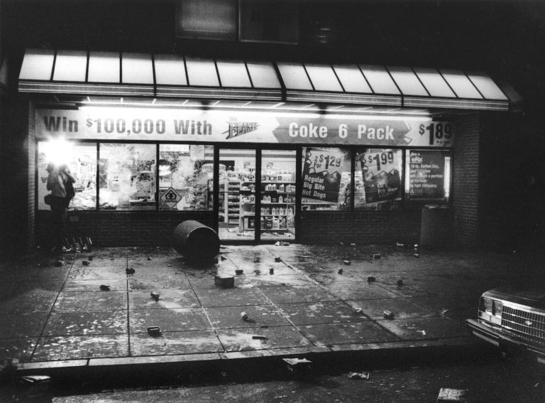

Left shattered and ransacked in the aftermath of the 1991 “disturbios”— also known as the Mount Pleasant Riots— the store remains a marker of the civil unrest that erupted after police shot a Salvadoran man.
A report commissioned after the violence found the community underserved by government programs, over-policed, and under-represented in government. The findings fueled the creation of committees dedicated to investing in and revitalizing the areas—a turning point, locals say.
But in recent decades, housing prices have increased dramatically across the city. According to multiple studies, Washington, D.C. has one of the highest rates of gentrification— the process of urban change as higher income, often white, residents move in— in the country. And historically Latino neighborhoods, like Mount Pleasant and Adams Morgan, are no exemption.

The Mount Pleasant 7-Eleven after the 1991 "disturbios." Photo courtesy Hola Cultura.
Areas that used to be known for as cultural touchstones of the local Latino community are now more widely recognized for their restaurants, retail options, and quiet residential options.
Up the main road, the first signs are clear: local tiendas with the Virgin Mary and Cafe Bustelo proudly displayed in their windows melt away into high priced restaurants.
In the residential neighborhood nearby, pastel little free libraries dot every other corner. A mural— painted in the 1980’s by the local Latin American youth center— now bends out of sight.
Many immigrants now reside outside the city, in nearby Maryland and Virginia suburbs: in neighboring Silver Spring, roughly 25% of the population is Latino, according to The Census Bureau.
Though city’s are constantly in flux, the Latino community continues to be one of the largest and rapidly growing demographics in the area.
Reminders of Mount Pleasant's history dot the neighborhood. Photo by Carmen Molina Acosta.